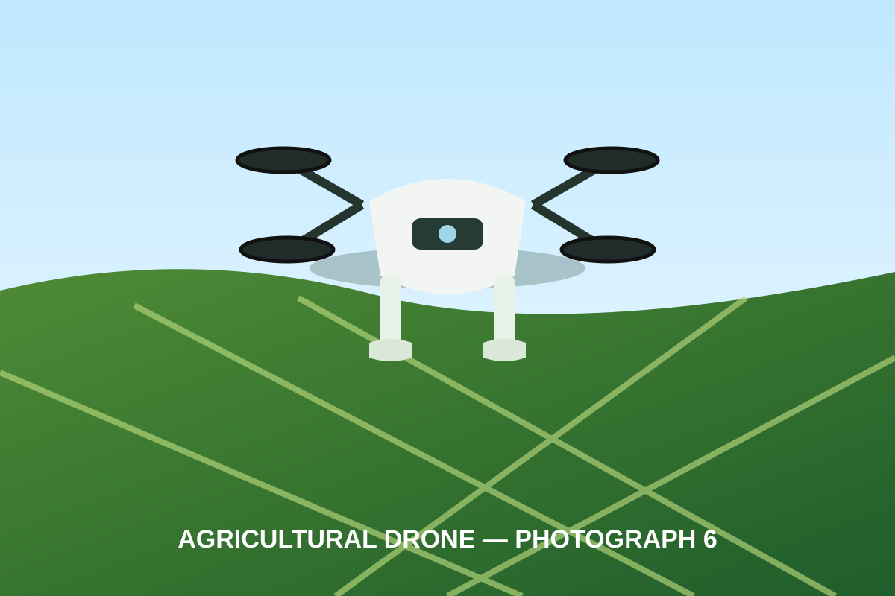

“Afuo mapa no maa yɛn kuw no nyaa afuo no ho mfonini a emu da hɔ yiye, na ɛmaa nhyehyɛeɛ yɛɛ mmerɛ.”
Kwame MensahAguadiɛ Afuofoɔ • Apueeɛ Mantam
Agri-Technology Africa de drone mfiridwuma, dijitaal asase mapa, wim afifideɛ hwɛdeɛ ne AI nhwehwɛmu bom ma afuo hu nea ɛrekɔ so, yɛ adeɛ ntɛm, na wɔde nimdeɛ yɛ adwuma yiye.
📞 +233 245 606 400 • ✉ tetsolos@gmail.com


Yɛde yɛn adwene si afuo mu aba pa so: afuo ho nimdeɛ, adwuma a ɛyɛ ntɛm, data a ɛho hia, ne mfiridwuma a wɔde di dwuma wɔ kwan pa so.
Yɛyɛ wim nnuru-pete nhyehyɛeɛ ma afuo a ɛfata, na yɛde ahobammɔ ne mmara di kan.
Hwɛ Mu →Yɛhwɛ afifideɛ no wɔ wim mpɛn pii de hu nsonsonoeɛ ne mmeaeɛ a ɛsɛ sɛ wɔkɔhwɛ no wɔ afuo mu.
Hwɛ Mu →Yɛyɛ wim mapa ne asase susudua ma afuo hyeɛ, nhyehyɛeɛ, kyerɛwtohɔ ne afuo sohwɛ.
Hwɛ Mu →
Agri-Technology Africa yɛ afuo mfiridwuma nhyehyɛeɛ a ɛpɛ sɛ ɛma nnɛyi drone nnwuma yɛ nea afuo, afuofoɔ akuw, aguadiɛ afuo, nhwehwɛmufoɔ ne nkɔsoɔ nnwuma betumi de adi dwuma.
Yɛde drone mfoni 10 ahyɛ wɛbsaet no mu. Sɛ wobɛhyɛ no ase wɔ aguadi mu a, fa wo ankasa mfoni a wowɔ ho tumi di dwuma.





Eyinom yɛ nhwɛsoɔ adwene a yɛde ahyɛ wɛbsaet no mu. Sɛ wobɛka no sɛ nokware adanseɛ a, fa wɔn a wɔde dwuma no ankasa adanseɛ si ananmu.
Ka wo afifideɛ, afuo kɛseɛ, beaeɛ ne nea wopɛ sɛ yɛyɛ kyerɛ yɛn. Bolt nso betumi akyerɛ wo kwan wɔ yɛn nnwuma mu.